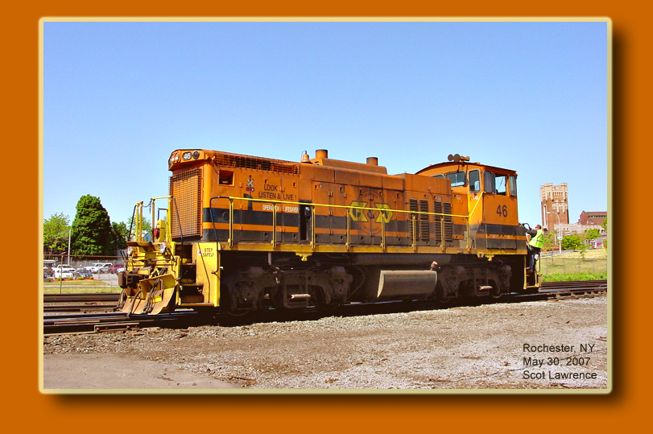
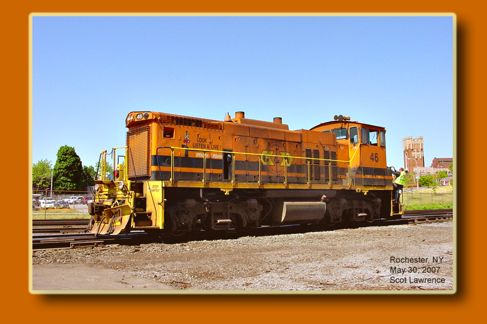
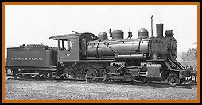
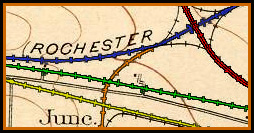

Welcome to the Dansville & Mount Morris Genesee & Wyoming Rochester & Southern
all-time roster and surviving locomotives page

Welcome to the Dansville & Mount Morris Genesee & Wyoming Rochester & Southern
all-time roster and surviving locomotives page

| Welcome to the DMM, G&W and R&S History and Roster pages! These pages are intended to be a history of the three railroads that make up today's Rochester & Southern system of Western New York, and an all-time roster for all three railroads. Each
Railroad will have its own page, linked below.
Page
1. The Dansville & Mount Morris Railroad.
Page
2. The Genesee & Wyoming Railroad.
Page
3. The Rochester & Southern Railroad.
Page
4. The Genesee & Wyoming photo archive.

Page
5. Tour of DMM-G&W-R&S sites today.
|
| LINKS Photos and Roster Sources: G&W photos on rr-fallenflags.org Booklet
-
"The
Genesee & Wyoming Railroad Company, 1875-1970,
Seventy Fifth
Anniversary" G&W steam and diesel rosters collected from the G&W by Charles Woolever. G&W
rosters
compiled by Doug McBride in 1998.
Scot
Lawrence
For more
discussion about
these railroads and the gathering of data for this
page, These webpages are not affilated with Genesee &
Wyoming,
Inc. or
its subsidiaries. |
|